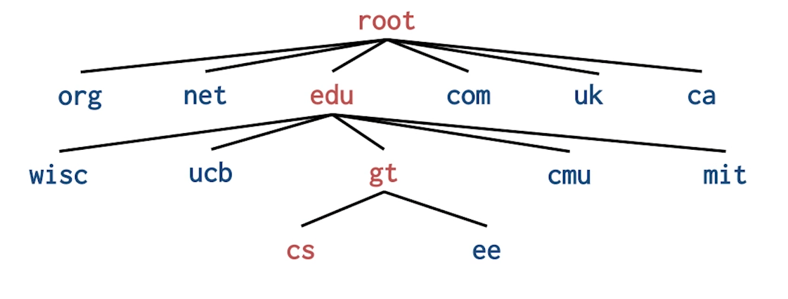
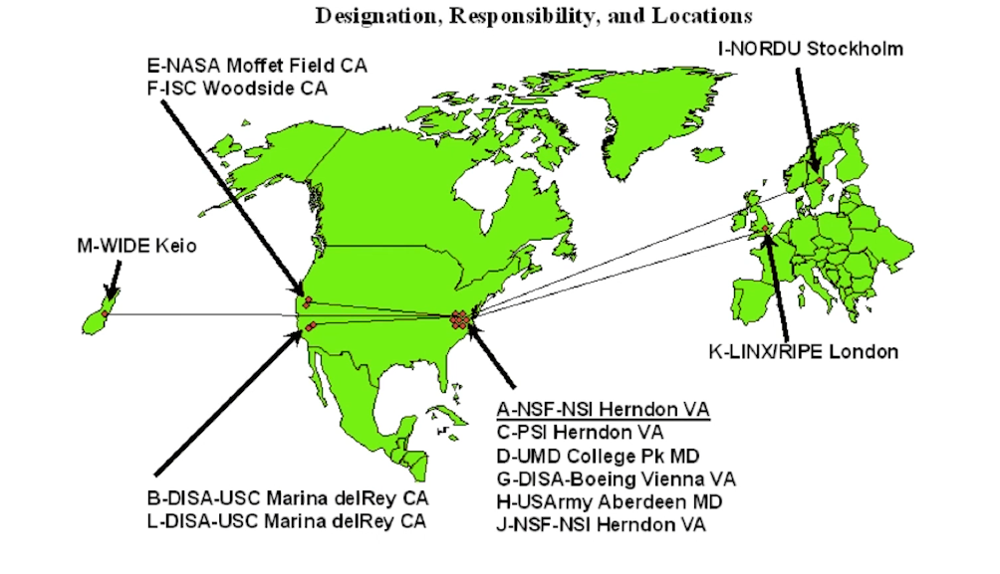
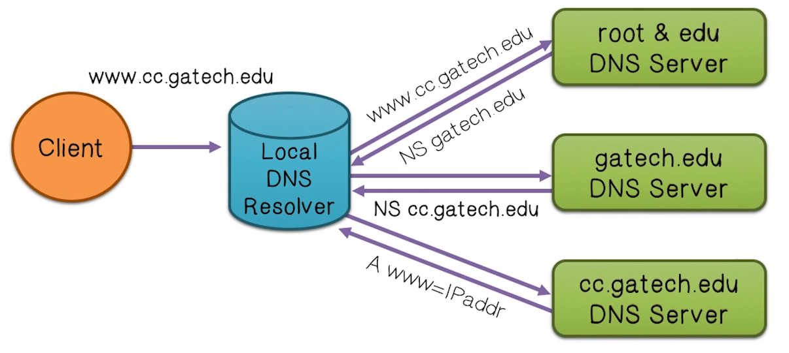
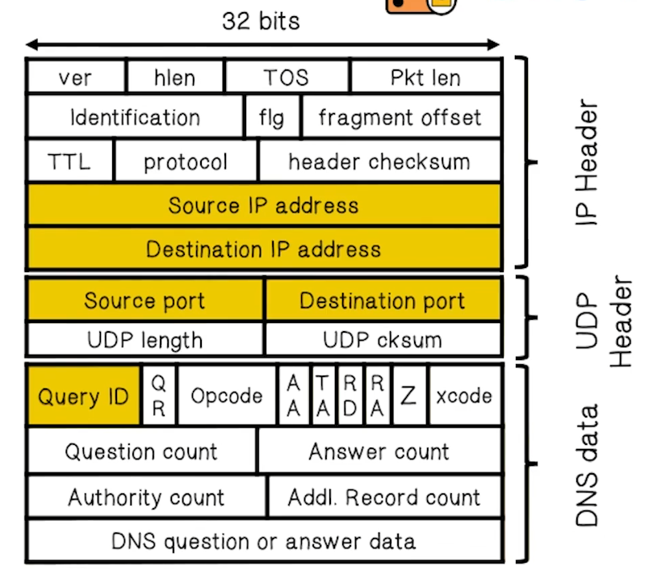
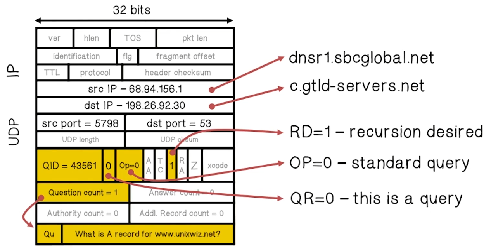
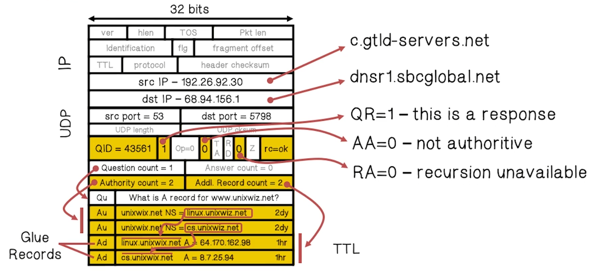
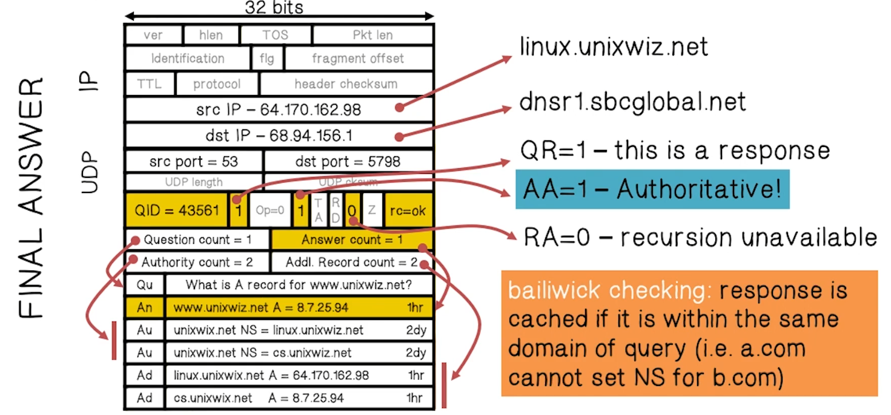
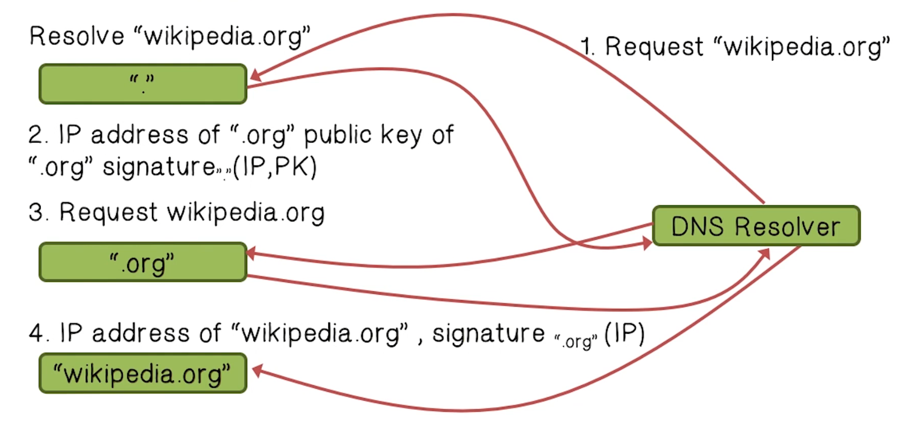

NetSec Lecture Notes - Lesson 9 - Domain Name Systems Security
Domain Name Systems Security
- Hierarchical Name Space (hierarchical database) 
- There are 13 root servers 
DNS Lookup
- An iterative (recursive) process querying the hierarchical database 
- DNS record types (partial list)
- NS: name server (points to other server)
- A: address record (contains IP address)
- MX: address in charge of handling email
- TXT: generic text (e.g. used to distribute site public keys a la DKIM)
DNS Caching Quiz
Changing a domain name into an IP address involves a large number of steps. To save time, the records are cached on a local server for reuse later. Each record has a TTL that states how long a record can be kept for future use.
Caching
- DNS responses are cached
- Quick response for repeated translations
- Note: NS records for domains are also caached
- DNS negative queries are cached
- Save time for nonexistent sites, e.g. misspelling
- Cached data periodically times out
- Lifetime (TTL) of data controlled by owner of data
- TTL passed with every record
Basic DNS Vulnerabilities
- Users/hosts trust the host-address mapping provided by DNS
- Used as basis for many security policies
- Broswer same origin policy, URL address
- Used as basis for many security policies
- Obvious problems
- Interception of requests or compomise of DNS servers can result in incorrect or malicious responses
- e.g. malicious access point in a cafe
- Interception of requests or compomise of DNS servers can result in incorrect or malicious responses
- Solution
- Authenticated requests/responses
- Provided by DNSsec, but few use DNSsec yet
- Authenticated requests/responses
Cache Poisoning
- Basic idea: give DNS servers false records and get it cached
- DNS uses a 16-bit request identifier to pair queries with answers
- Cache may be poisoned when a name server:
- Disregards identifiers
- Has predictable ids
- Accepts unsolicited DNS records
DNS Quiz
- DNS stores the IP address. For security reasons the domain name is stored somewhere else
- All domain names and IP addresses are stored at the central Registry
- True
- It can take several days for information to propagate to all DNS servers
- True
DNS Packet

- Query ID
- 16bit random value
- Links response to query
- Example Request
- 
- Example Response to Resolver
- 
- Example Authoritative Response
- 
Traditional Poisoning Attack
- Attacker sends a normal DNS query to a local resolver, via a compromised machine (call it A1)
- Eventually this request will recurse down to the authoritative server, which will send a valid response
- In the meantime, attacker will send a forged response with a malicious IP address from a second comrpomised machine (call it A2), racing the real response from the authoritative server
- Attacker does not know the query ID, so must send a flood of responses with guessed query IDs and hope one lands with the right query ID before the official response does
- If that happens, the poisoned result will be cached, causing all DNS traffic to point to the malicious IP address until TTL expires
- If this attempt is not successful, the attacker needs to wait for TTL to expre before retrying
Kaminksy’s Poisoning Attack
- RIP Dakami
- General approach is the same as traditional poisoning
- The difference is in the payload. Traditional approach tries to poison the cached address record, whereas this goes up one level and hijacks the authority records instead
- Goal is to have the DNS server cache the wrong IP address for authoritative service for a random domain (e.g. $RAND.www.google.com)
- Efficiency gain is that attacker doesn’t have to wait for TTL to expire, can just pick a different random domain and try again immediately
DNS Defenses
- Increase Query ID size
- Randomize source port, additional 11 bits
- Now attack takes several hours
- Ask every DNS query twice
- Attacker has to guess QueryID correctly twice (32 bits)
- But DNS system cannot handle the load
- DNS SEC
DNS SEC
- Guarantees
- Authenticity of DNS answer origin
- Integrity of reply
- Authenticity of denial of existence
- Accomplish this guarantee by signing DNS replies at each step of the way
- Uses public-key cryptography to sign responses
- Typically use trust anchors, entries in the operating system to bootstrap the process
- Example
- 
DNS Rebinding Attack
- Attacker registers a domain name, say
www.evil.com - Attacker sets extremely short TTL for this record
- Attacker sets up malicious JS to execute, and when TTL expires rebinds hostname to an address usually reserved for internal networks, e.g.
192.168.0.100 - Victim firewall does not properly guard against this “internal” address and so malicious JS traffic is permitted through
- Additionally, browser now views these commands as coming from the same origin, so it will allow the script to access resources it should not
Defenses
- Browser mitigation: DNS Pinning
- Refuse to switch to a new IP
- This interacts poorly with proxies, VPN, dynamic DNS, and other common mechanisms
- Thus, this is not consistently implemented in any browser
- Server-side defenses
- Check host header for unrecognized domains
- Authenticate users with something other than IP
- Firewall defenses
- External names can’t resolve to internal addresses
DNS Rebinding Quiz
- The attacker needs to register a domain and delegate it to a server under his control
- True
- The attacker’s server responds with a short TTL record
- True
- A short TTL means thee page will be quickly cached
- The attacker exploits the same origin policy
- True